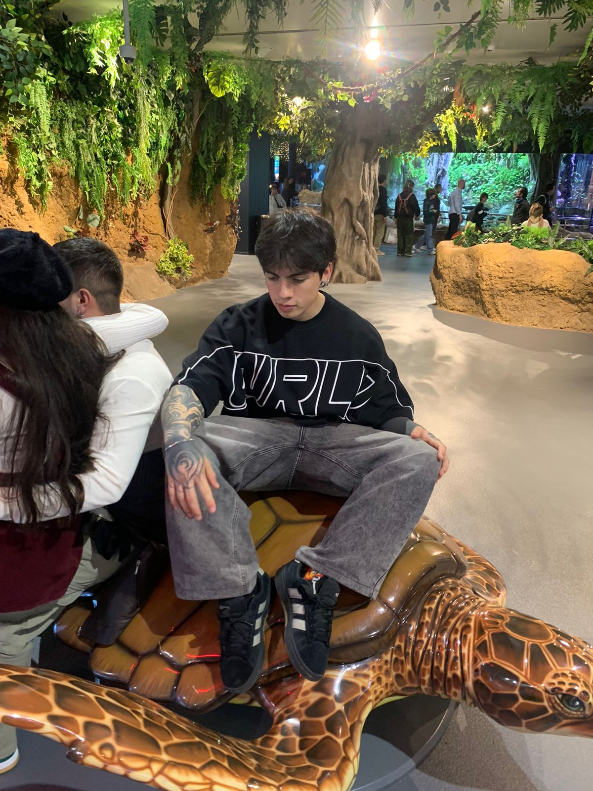
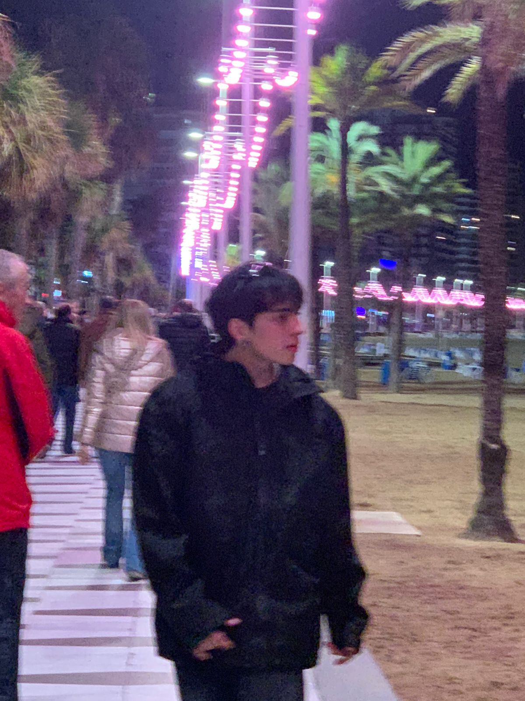
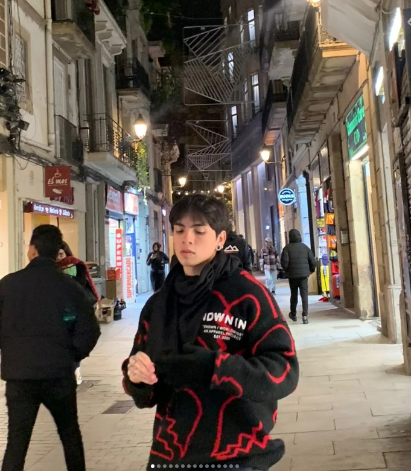

21 años
Nacido el 26/03/2005
Mis expectativas como profesional están enfocadas en el crecimiento continuo y la adaptación a los cambios tecnológicos. Aspiro a fortalecer mis habilidades en desarrollo de software y resolución de problemas, aportando soluciones innovadoras. Espero trabajar en equipo, aprender de otros profesionales y participar en proyectos que generen impacto. A largo plazo, busco consolidarme como un profesional competente, ético y comprometido, capaz de contribuir al desarrollo tecnológico y alcanzar estabilidad y satisfacción en mi carrera.


